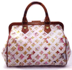
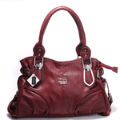
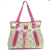
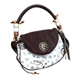
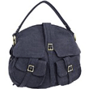
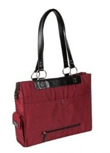

Women Bags

Add a description of Bag1 here

Add a description of bag2 here

Add a description of bag3 here
Add a description of bag4 here

Add a description of bag5 here

Add a description of bag6 here
Add a description of bag7 here

Add a description of bag8 here
Womenbags is a name to reckon with to add a dash of style to your everyday lifestyle. We design with style, to offer ultimate satisfaction to our most passionately discerning customers. With our exhaustive collection of stylish handbags bags, trendy Bucket Bags, Clutch Purses we lead the demanding handicraft market.
We Offer an enduring quality embroidered bags and embroidered handbags in different styles, patterns with exquisite fabrics, myriad shades, rich and cool colors. You can find variety of bags with sequins, cutwork, mirror work and lots more.